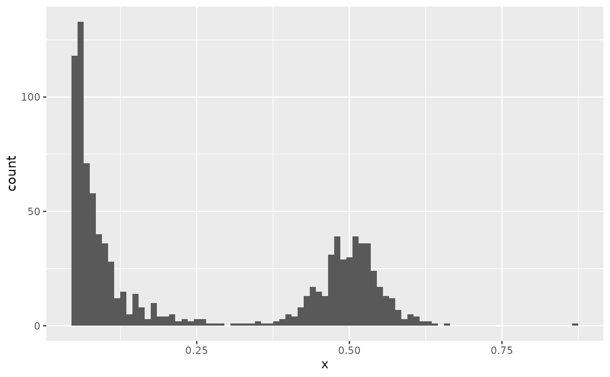
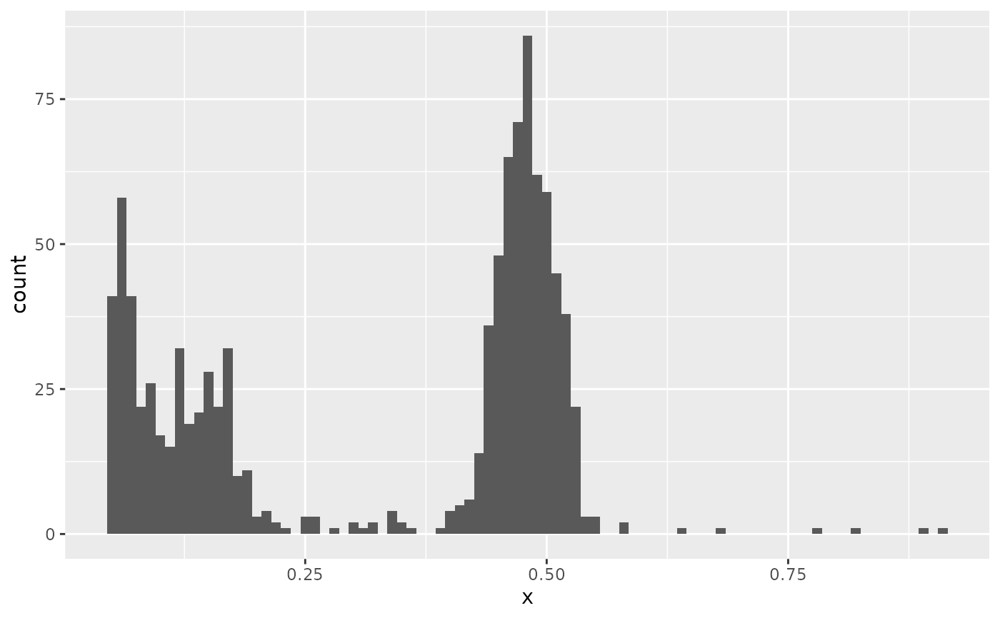

This function can be used to generate data from a MOBSTER
model, or from a custom mixture. The principle is the same of function
ddbpmm.
Usage
rdbpmm(
x,
a = NULL,
b = NULL,
pi = NULL,
shape = NULL,
scale = NULL,
n = 1,
tail.cutoff = 1
)Arguments
- x
An object of class
"dbpmm".- a
Vector of parameters for the Beta components; if this is null values stored inside
xare used.- b
Vector of parameters for the Beta components; if this is null values stored inside
xare used.- pi
Mixing proportions for the mixture; if this is null values stored inside
xare used.- shape
Shape of the power law; if this is null values stored inside
xare used.- scale
Scale of the power law; if this is null values stored inside
xare used.- n
Number of samples required (i.e., points).
- tail.cutoff
Because the Pareto Type I power law has support over all the positive real line, tail values above
tail.cutoffare rejected (and re-sampled).
Examples
library(ggplot2)
# 1 Beta component at 0.5 mean (symmetrical Beta)
a = b = 50
names(a) = names(b) = "C1"
# 60% tail mutations
pi = c('Tail' = .6, 'C1' = .4)
# Sample
v = data.frame(x = rdbpmm(
x = NULL,
n = 1000,
a = a,
b = b,
pi = pi,
shape = 2,
scale = 0.05
))
ggplot(v, aes(x)) + geom_histogram(binwidth = 0.01)

# Or use the parameters of a model available
data('fit_example', package = 'mobster')
v = data.frame(x = rdbpmm(x = fit_example$best, n = 1000))
ggplot(v, aes(x)) + geom_histogram(binwidth = 0.01)
